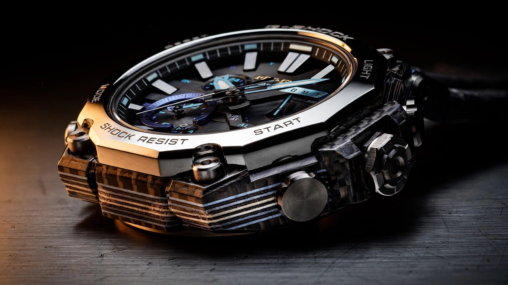

Designed by Algorithm, Cut from Carbon: Inside the G-Shock MTG-B4000's AI-Engineered Frame
Casio fed forty years of shock-resistance data into finite element simulations, handed the output to human designers for refinement, then CNC-cut the resulting structure from laminated carbon-glass fiber sheets. The MTG-B4000 is the first G-Shock whose frame geometry was born from that loop. It wears like a premium chronograph. It survives like a G-Shock.

A Frame Problem
Every G-Shock traces its lineage to the same tension: resin absorbs shock beautifully but lacks the density and surface finish of metal, while metal looks and feels substantial but transmits impact energy with merciless efficiency, and for three decades Casio's MT-G line has negotiated that tradeoff by wrapping metal bezels and lugs around resin-encased movements in progressively more elaborate configurations. Each generation introduced new materials, new finishing techniques, new ways of distributing load. None changed the fundamental design methodology, in which engineers sketched, prototyped, tested, revised, and tested again.
That loop is slow, not because the engineers are slow, but because the design space is enormous and the constraints interact in ways that resist intuition. A watch case is a three-dimensional shell loaded in compression, shear, torsion, and impact simultaneously, and changing the wall thickness at one point shifts stress concentrations elsewhere in patterns that are invisible on paper. Remove material for weight savings and you introduce flex that might amplify vibration at a resonant frequency no sketch can predict. Human intuition handles this by simplifying: pick a geometry that looks right, test it, fix the obvious failures, iterate toward something acceptable.
Acceptable is what Casio got tired of.
Simulation Before Steel
For the MTG-B4000, Casio's Hamura R&D center in western Tokyo tried something different: rather than starting from a finished sketch, designers created a rough geometric concept for the frame and fed it into AI-driven load simulation software that draws on the company's proprietary database of G-Shock impact-test results accumulated over four decades. But calling this "AI" requires precision, because Casio is not generating watch designs from text prompts. Its system runs finite element analysis, a method that divides a solid structure into thousands of tiny elements and calculates how each one deforms under applied loads, then evaluates the results against structural strength requirements, material behavior models, and machinability constraints to propose modified geometries that satisfy everything simultaneously. The designer reviews each proposal, adjusts for aesthetics and manufacturing feasibility, feeds the revision back in, and the cycle repeats.
This is topology optimization, not generative design in the marketing sense. Nobody types "design me a cool watch frame" and receives a finished product. Rather, the algorithm starts with the maximum material envelope and systematically removes material from regions where stress is low, leaving organic-looking load paths that a human designer would never draw freehand, structures that look less like engineering and more like bone or coral because biology solved the minimum-weight-maximum-strength problem first. Think of it as erosion guided by physics.
Casio has not published the specific simulation software used, nor the number of iterations required, and what the company has disclosed is limited to the workflow pattern: designers propose, software simulates, designers refine, software re-simulates, repeating until the frame satisfies G-Shock's Triple G Resist criteria for shock, centrifugal force, and vibration resistance while simultaneously meeting weight targets and manufacturing constraints. According to Casio, the resulting frame geometry "would have been difficult to achieve using traditional methods." Given the MTG-B4000's complex, multi-curved frame profiles, that claim is plausible.
Carbon in Layers
Once the frame geometry was locked, the next question was material, and Casio chose laminated sheets of carbon fiber and glass fiber, stacked in alternating layers and bonded with resin, then CNC-cut after curing into the complex three-dimensional shapes that the AI optimization had specified. Not chopped-fiber composite. Not woven cloth draped over a mold. Flat laminated sheets, machined into a watch frame.
Why laminate? Carbon fiber is enormously stiff along the fiber direction but comparatively weak in the perpendicular plane, and laminating alternating layers at different orientations gives quasi-isotropic stiffness, meaning the frame resists bending similarly regardless of which direction the load arrives from. Glass fiber layers add toughness, because carbon is strong but brittle and snaps rather than bends, while glass is softer but far more ductile, absorbing energy through deformation rather than fracture. Alternating carbon and glass creates a composite that captures carbon's stiffness alongside glass's damage tolerance in a single structure.
Now the aesthetic dimension. When Casio CNC-machines the frame from these laminated sheets, the cut edges expose the layered cross-section: carbon layers appear dark, glass layers lighter, and each watch displays a unique striped pattern because the exact distribution of fibers varies slightly within each sheet. Casio calls this a design feature, and it is, but it is also an honest expression of the material's internal structure, the manufacturing equivalent of a wood grain where every piece differs because no two billets are identical. Watches that show you how they were made tend to age better than watches that hide it.
The frame dimensions tell the structural story concisely: the completed MTG-B4000 measures 56.6 by 45.3 by 14.4 millimeters and weighs 112 grams. Compare that to the previous-generation MTG-B3000 at 51.9 by 50.9 by 14.2 millimeters and 111 grams. The B4000 is narrower lug-to-lug, nearly identical in thickness, and one gram heavier despite a substantially different frame architecture. Weight parity with a completely different structural approach suggests the optimization worked: the new frame carries the same mass but distributes it differently, placing material where simulation showed it was needed rather than where convention dictated.
Metal Injection Molding: Powder Into Precision
The case back tells another manufacturing story. Casio produces it through Metal Injection Molding, or MIM, a process that most watch enthusiasts have never heard of despite its widespread use in Swiss horology for bracelet links, clasps, and small case components.
MIM works nothing like machining. Instead of carving a shape from a solid billet, you mix fine metal powder, typically under 20 microns in particle size, with a thermoplastic binder to create a feedstock that gets injected into a mold at high temperature and pressure, exactly like plastic injection molding. Once cooled, the resulting "green part" is a fragile replica of the final shape, roughly 20 percent oversized because the binder occupies space between metal particles.
Next comes debinding: chemical or thermal processing removes the plastic binder, leaving a porous metal skeleton called a "brown part," and then sintering in a furnace above 1,300 degrees Celsius fuses the metal particles together while the part shrinks uniformly as pores close, reaching densities above 95 percent of theoretical. Post-sintering heat treatments bring properties in line with wrought equivalents.
For the MTG-B4000 case back, MIM allows geometries that would be prohibitively expensive to machine. Intricate three-dimensional contours, undercuts, variable wall thicknesses, and complex surface textures emerge from the mold in a single shot. Casio leverages this to create a case back with structural depth that reinforces the frame attachment points, something a flat machined plate cannot do as effectively. Tolerances of plus-or-minus 0.3 percent are standard for MIM, adequate for a case back that interfaces with gaskets and screwed components.
Swatch Group uses MIM for Omega bracelet components. Rolex machines everything from billet because its production volumes justify dedicated CNC lines and its brand positioning demands it. Casio's choice of MIM for the case back is pragmatic: the complexity of the B4000's three-dimensional case-back geometry makes MIM the most cost-effective path to the required shape at production volumes.
Sallaz on a G-Shock
This is where the MTG-B4000 gets quietly audacious. Casio applies Sallaz polishing to certain mirror-finished surfaces on the stainless steel bezel components.
Sallaz polishing is a specific technique, not a generic marketing term. It originated with polishing machines built by Gebrüder Sallaz, a German manufacturer whose equipment Seiko purchased in the 1950s. Workers at Seiko's Hayashi Seiki facility started calling the process "Zaratsu" after their Japanese pronunciation of the Sallaz name. Grand Seiko made the technique famous by using it to create the distortion-free mirror surfaces and razor-sharp plane transitions that define the Grand Seiko Style.
What makes Sallaz different from conventional buffing is the contact geometry: ordinary polishing uses a soft cloth wheel that conforms to the workpiece, producing a bright but geometrically imperfect surface where reflections bend subtly and edges round off, while Sallaz uses a hard, flat rotating disc, and the polisher holds the workpiece against the disc's face rather than its edge. Done correctly, the result is a mathematically flat surface where reflections do not distort and edges between polished and brushed zones appear sharp enough to have been cut rather than ground, though achieving this requires extraordinary skill because pressure, duration, speed, and contact position must be judged entirely by feel.
Casio has used Sallaz polishing before on the MR-G line, which occupies the summit of the G-Shock range at prices exceeding $5,000. Bringing it down to the MTG-B4000 at $1,500 is a meaningful statement about where Casio sees this watch in its hierarchy. Paired with separate hairline finishing on other bezel surfaces, the dual-finish treatment creates exactly the kind of light-and-shadow contrast that Grand Seiko pioneered, applied here to a watch that also survives a 10-meter drop onto concrete.
Band Loads Into the Frame
One structural innovation in the MTG-B4000 deserves attention beyond marketing copy. Casio integrated the band connection points directly into the carbon frame rather than attaching them to the case. In previous MT-G designs, the band connected to lug components that were ultimately mounted to the metal case structure. Impact loads transmitted through the band, through the lugs, into the case, and from there into whatever protected the movement.
Rerouting that load path changes the dynamics of impact absorption. When you slap your wrist against a doorframe while wearing the watch, the strap tugs on the lugs. In the old architecture, that tug pulled on metal components bolted to the case, concentrating stress at the bolt interfaces. In the B4000, the tug pulls on the carbon frame itself. Carbon fiber composites excel at distributing loads across their length because the continuous fibers act as tension members. Rather than concentrating stress at fastener holes, the frame spreads it across the entire laminated structure.
Casio further reinforced this by eliminating screws from the metal lug attachments. Screws create stress risers: small holes with sharp edges where cracks love to start. Instead, the metal lug components in the B4000 interlock mechanically with the carbon frame through geometry, held in position by the assembled fit of the surrounding components rather than by threaded fasteners. Fewer stress risers, fewer potential failure initiation points, and a cleaner visual profile where the carbon frame meets the metal exterior.
What It Does Not Do
It is not a mechanical watch, and nobody should expect it to be one. Inside sits a quartz movement powered by Casio's Tough Solar system, receiving time signals from six global radio stations and Bluetooth-syncing to a smartphone app for automatic correction, which means accuracy is quartz-grade: irrelevant to the precision obsessions that drive mechanical horology. Nobody buys this watch for the movement.
At 56.6 millimeters lug-to-lug and 14.4 millimeters thick, the watch is large, not grotesquely large for the MT-G category, and the 45.3-millimeter width keeps it narrower than many competitors, but it is not a dress watch and does not pretend to be one.
And there is the price question. At $1,500 for the resin-strap models and likely higher for the forthcoming metal bracelet variant (MTG-B4000D), this sits in a strange competitive neighborhood: more expensive than any standard G-Shock and most Citizen Promaster or Seiko Prospex options, yet less expensive than the MR-G line whose manufacturing techniques it partially shares. Whether the AI-designed frame, the carbon-glass lamination, the MIM case back, and the Sallaz polishing justify the premium over a $400 GA-B2100 depends entirely on how much how-it-was-made matters to you relative to what-it-does.
Where It Fits
Casio has been making watches since 1974, and G-Shock launched in 1983 with a single mandate: survive a 10-meter fall. Everything since has been variation on that theme, but the variations have gotten spectacular, stacking Carbon Core Guard, sapphire crystals, titanium cases, Bluetooth connectivity, and solar charging atop the original promise of indestructibility.
What makes the MTG-B4000 different from its predecessors is not what it adds but how it arrived there, because previous G-Shock innovations were human-designed from start to finish, and even the most brilliant spatial reasoning operates within the limits of what a person can sketch, prototype, and test in available time. AI-assisted topology optimization does not replace those engineers. It extends their reach into geometric territory they cannot explore manually, and the B4000's frame profiles, with their organic curves and variable-thickness sections, exist because an algorithm found them in a design space too large for sketching to traverse.
Whether this matters to you depends on what you value in a tool. Some people buy watches for heritage. Some buy them for precision. Some buy them for status. Some buy them because a $1,500 G-Shock with an AI-designed carbon frame, Sallaz-polished steel, and a MIM case back is a genuinely new thing in the world, and new things made with visible craft are worth paying attention to, regardless of whether you ever strap one to your wrist.
Casio made G-Shock tough by instinct for forty years. Now it is making it tough by computation. The watch does not care which method designed its frame. It just survives.
| G-Shock MTG-B4000 Specifications | |
|---|---|
| Case Size | 56.6 × 45.3 × 14.4 mm |
| Weight | 112 g (resin strap) |
| Case Materials | Carbon fiber reinforced resin inner case, stainless steel bezel, laminated carbon-glass fiber frame |
| Case Back | Stainless steel via Metal Injection Molding (MIM) |
| Crystal | Sapphire with anti-reflective coating |
| Bezel Finishing | Sallaz mirror polish + hairline brush, blue-gray IP (B4000B variants) |
| Water Resistance | 200 meters (20 bar) |
| Movement | Tough Solar quartz, Multiband 6, Bluetooth smartphone link |
| Protection | Triple G Resist (shock, centrifugal force, vibration) |
| Power Reserve | ~5 months without light, ~18 months in power save |
| Frame Design | AI-assisted topology optimization, CNC-cut from laminated carbon-glass fiber sheets |
| Band Connection | Integrated into carbon frame, screwless metal lug attachment |
| US Retail Price | $1,500 (MTG-B4000B-1A) |
| Manufactured | Yamagata Casio, Japan |